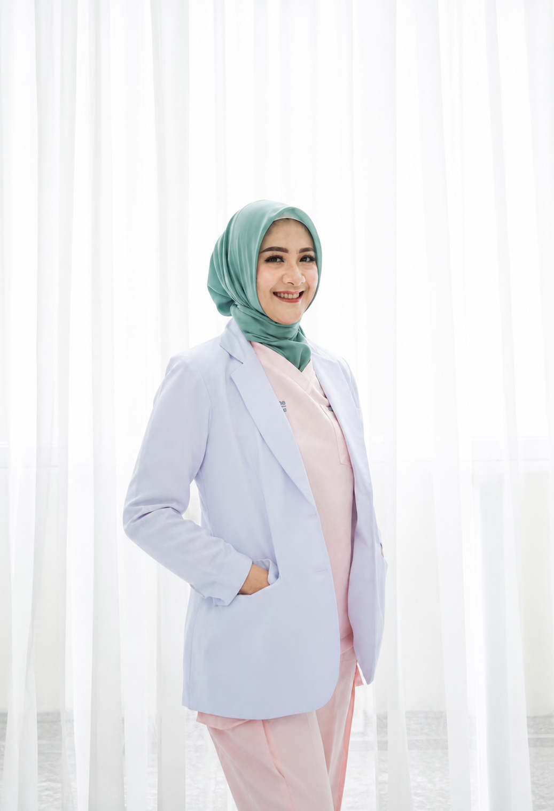

— Sesi 01 · Menopause Mastery
Gejala, Pengobatan & Self-Care Rituals Pada Menopause
Bulan Depan · 19.30 WIB
- Apa yang sebenarnya terjadi di tubuh — penjelasan berbasis sains
- Gejala umum yang sering diabaikan: hot flash, brain fog, gangguan tidur
- Pendekatan medis dan non-medis yang aman
- Self-care rituals harian untuk kualitas hidup lebih baik
- Kapan saatnya konsultasi ke dokter

Pembicara
dr. Nuri Dyah Anggraini, SpOG